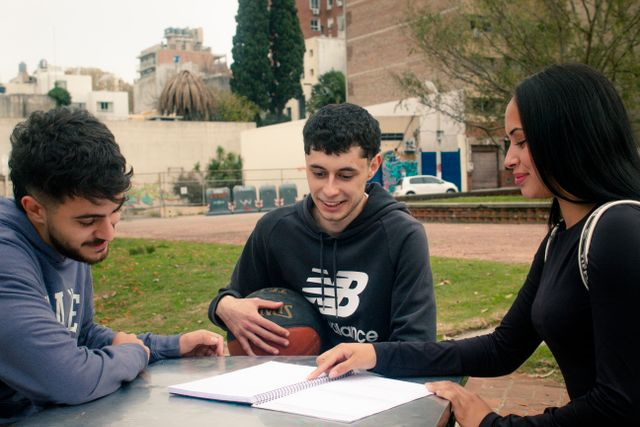
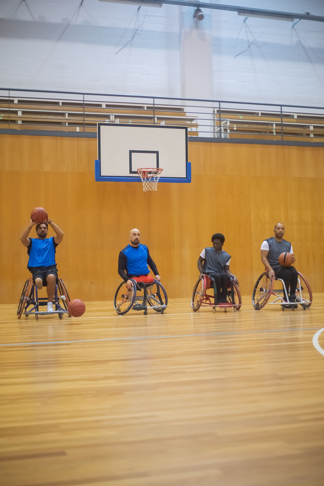
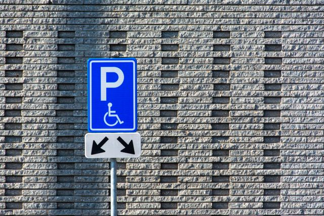
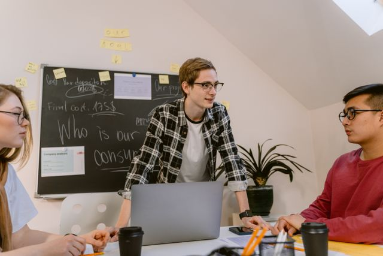
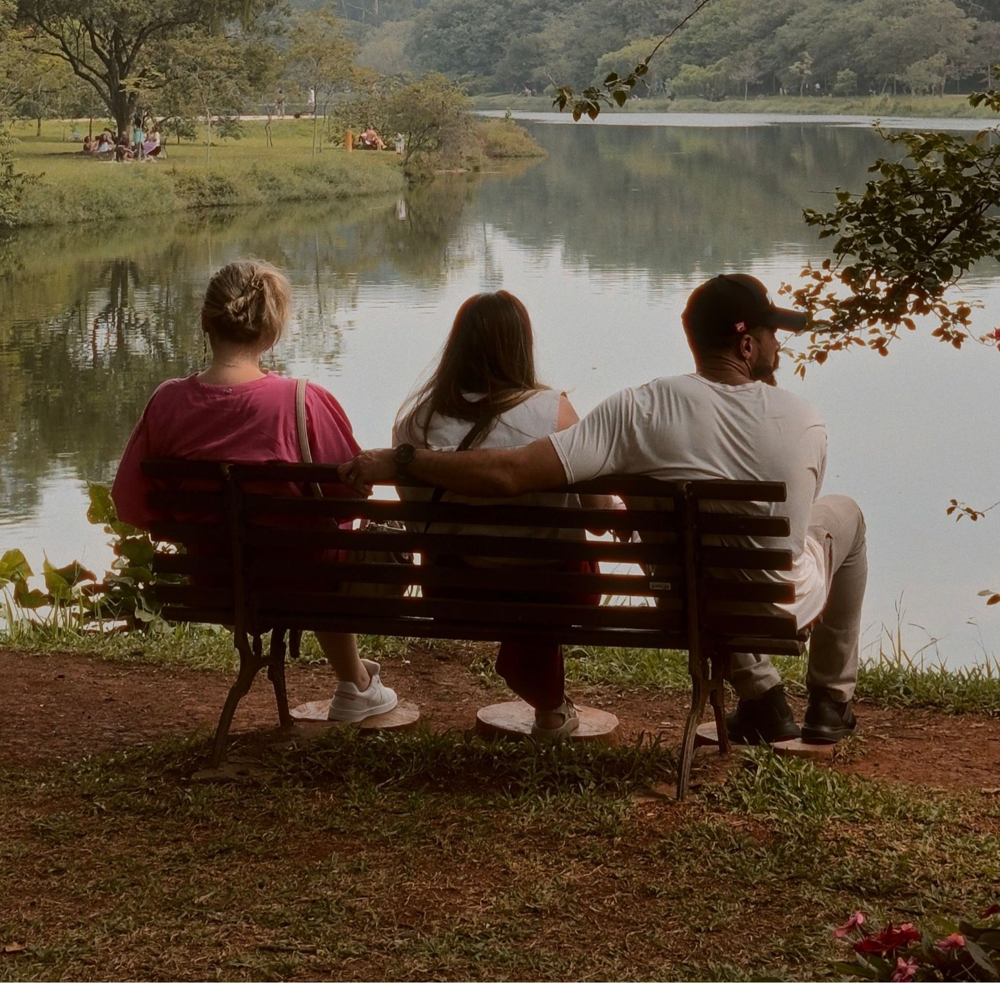
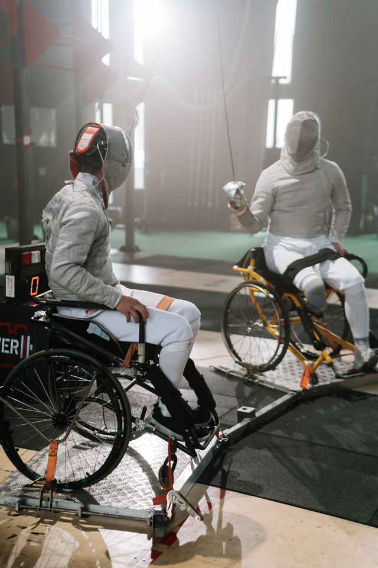
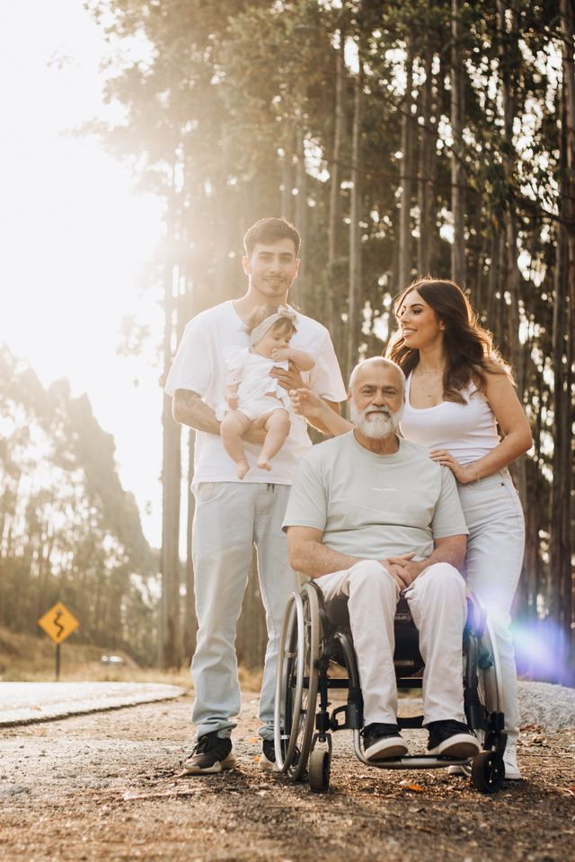
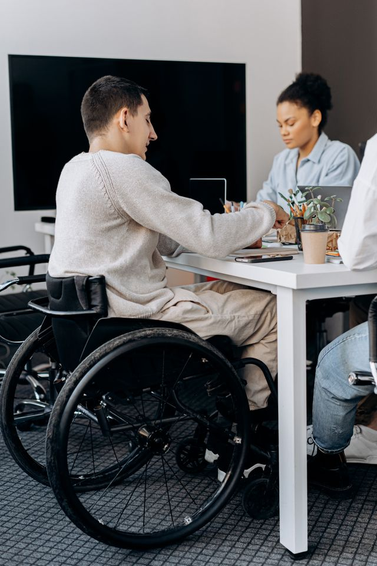
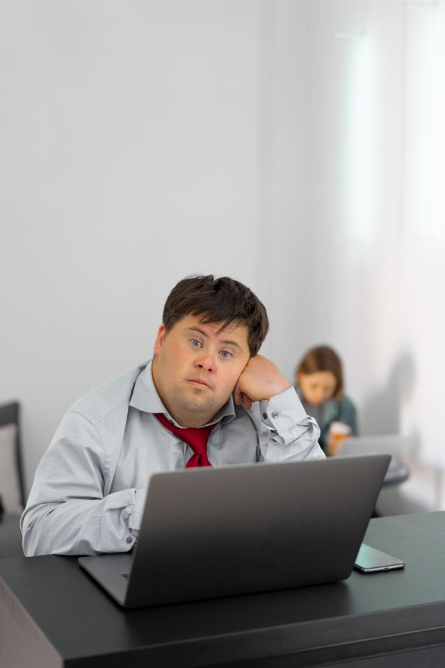

Estudante estudando ao ar livre
Pertencer é estar junto
Um encontro entre amigos registra a inclusão como ela deve ser: cotidiana, espontânea e cheia de afeto.
Fonte: Florencia Pérez / Pexels
Pessoas com direitos
📷 GALERIA INCLUI
Um ensaio visual sobre autonomia, identidade, convivência e o direito de ocupar todos os espaços.

descrição
Fotografia: Florencia Pérez / Pexels
“Representar é permitir que mais pessoas se reconheçam como parte da história.”
ACERVO VISUAL
Estudante estudando ao ar livre
Um encontro entre amigos registra a inclusão como ela deve ser: cotidiana, espontânea e cheia de afeto.
Fonte: Florencia Pérez / Pexels

Homens jogando basquete
O esporte adaptado promove inclusão, autoestima e bem-estar físico e mental.
Fonte: Kampus Production / Pexels

Placa de estacionamento acessivel em fundo de parede de tijolos
Cidades acessíveis começam por rotas seguras, transporte adequado e respeito ao direito de ir e vir.
Fonte: Jan van der Wolf / Pexels

Pessoas conversando em uma mesa com computador
Línguas de sinais são expressão, identidade e cultura das comunidades surdas em todo o mundo.
Fonte: Tima Miroshnichenko / Pexels

Três pessoas relaxando a beira de um lago
Canteiros elevados e caminhos acessíveis tornam hortas e jardins espaços reais de participação.
Fonte: Ariyan / Pexels

Homens em cadeiras de rodas praticando esporte esgrima
Competições adaptadas criam comunidade, visibilidade e novos caminhos para atletas com deficiência.
Fonte: Ron Lach / Pexels

Uma família multigeracional sorri junta para uma foto em uma estrada rural ensolarada, com o avô em uma cadeira de rodas.
Cães-guia apoiam a mobilidade de pessoas cegas, mas o acesso depende também de ambientes sem barreiras.
Fonte: juliane Monari / Pexels

Um homem numa cadeira de rodas trabalha numa mesa de escritório ao lado de colegas.
Participação significa ter espaço, recursos e voz para construir coletivamente as decisões.
Fonte: Mikhail Nilov / Pexels

Um homem com síndrome de Down trabalha ao computador num ambiente de escritório, apoiando a cabeça na mão.
A presença de pessoas com deficiência nos espaços públicos revela barreiras e inspira soluções melhores para todos.
Fonte: Mikhail Nilov / Pexels
fontes e uso responsável
Todas as fotografias desta galeria foram selecionadas no #. O crédito de cada autor aparece junto à respectiva imagem.
Legenas descrevem contextos sem infatilizar, generalizar ou transformar a deficiência na única característica das pessoas retratadas.